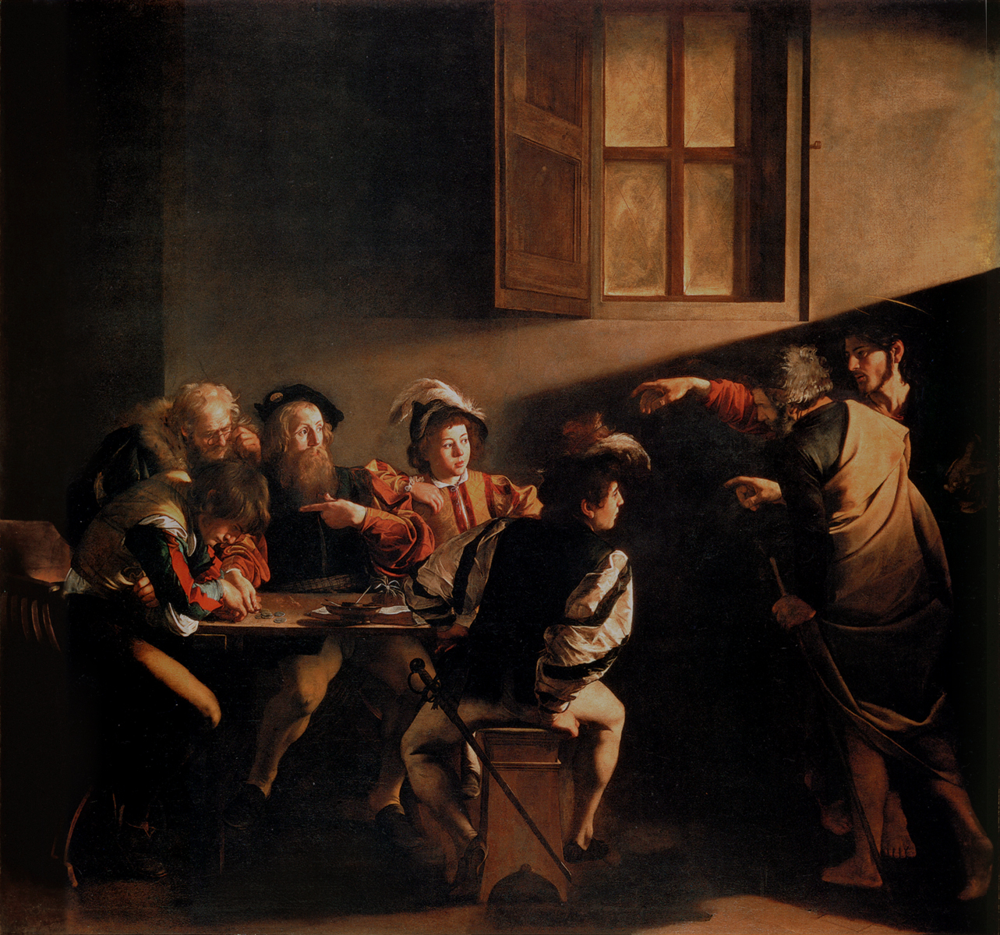
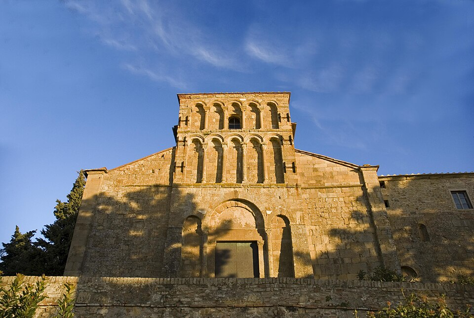

Terreno: oggi la campagna cambia — fuori dalla piana dell'Arno e dentro le basse colline della Val d'Elsa, vigne e strade bianche, con salita costante verso le torri. Distanza e dislivello sono misurati dalla traccia GPS del giorno.9
Ieri era la chiamata; oggi è la conversione — il lento voltarsi di una vita dopo che ha udito. E la conversione, nel Vangelo, non comincia con la nostra salita verso Dio. Comincia con la misericordia che scende fino a noi dove siamo seduti.
Andando via di là, Gesù vide un uomo, chiamato Matteo, seduto al banco delle imposte, e gli disse: «Seguimi». Ed egli si alzò e lo seguì. Mentre sedeva a tavola nella casa, sopraggiunsero molti pubblicani e peccatori e se ne stavano a tavola con Gesù e con i suoi discepoli. Vedendo ciò, i farisei dicevano ai suoi discepoli: «Come mai il vostro maestro mangia insieme ai pubblicani e ai peccatori?». Udito questo, disse: «Non sono i sani che hanno bisogno del medico, ma i malati. Andate a imparare che cosa vuol dire: Misericordia io voglio e non sacrifici. Io non sono venuto infatti a chiamare i giusti, ma i peccatori».
Matteo 9,9–13 · versione CEI 20081

La strada lascia San Miniato come l'ha trovata — su un'altura — e ti fa scendere nella valle dell'Elsa, dove la pianura cede il posto alle vigne e le strade bianche salgono tra loro verso un profilo di torri. È una campagna bellissima, ed è anche una campagna di soglie: oggi stai attraversando, da un tipo di terra a un altro. È anche il lavoro interiore del giorno.
Matteo non è su una cima quando Cristo lo trova. È al banco delle imposte — la dogana — a fare l'unico mestiere che rendeva un uomo insieme ricco e odiato, collaborando con Roma contro la sua stessa gente. È esattamente il tipo di persona che i devoti evitavano cambiando strada. Ed è a lui, a metà di una transazione, che giunge la parola: Seguimi. Qui la conversione non è la ricompensa di una vita pulita; è offerta al compromesso, all'invischiato, all'uomo che tutti avevano cancellato. «Non sono venuto a chiamare i giusti — dice Gesù agli scandalizzati — ma i peccatori.»
Nota, inoltre, che la risposta di Matteo non è un ritiro ma un banchetto. Si alza, segue — e poi spalanca la sua casa a una tavola piena di pubblicani e peccatori, con Gesù in mezzo a loro. La conversione trabocca. La misericordia che lo ha raggiunto non lo rende schizzinoso; lo rende ospitale proprio verso le persone che egli stesso era stato. Volgersi a Dio è, nello stesso istante, smettere di disprezzare i miseri — perché hai finalmente capito che eri uno di loro, e sei stato amato lo stesso.
Agostino, che per anni fuggì ciò che gli era più vicino di quanto egli stesso non lo fosse a sé, mise l'ansia di tutto questo in poche parole: tardi ti ho amato. Il ritardo è l'intera confessione. La conversione non è la scoperta di uno sconosciuto; è il riconoscimento, finalmente, di una misericordia che ti era stata seduta accanto, al banco, per tutto il tempo.
Che cosa in me ho difeso a lungo come giusto — mentre Cristo è venuto invece a chiamare un peccatore, e a guarirlo?
Il percorso di oggi, da San Miniato a San Gimignano. Mappa © CyclOSM / OpenStreetMap. Profilo altimetrico completo e tutte le tappe →
Finalmente è la Toscana classica: la Val d'Elsa che si apre in lunghe onde di vigne e ulivi, le strade bianche non asfaltate che si annodano sui crinali. Sono le colline della Vernaccia, l'antico vitigno bianco coltivato sui pendii arenari di San Gimignano.7 Il pedalare è più regolare e più lento di ieri; la salita è onesta ma mai crudele.
La strada segue la linea dei pellegrini per tutto il tragitto. Intorno al ventiquattresimo chilometro, a Gambassi Terme, passa quasi contro il muro di una piccola chiesa romanica — un luogo naturale in cui fermarsi.

Foto: Vignaccia76 (CC BY-SA 3.0) · Wikimedia CommonsPoi, per l'ultima ora, le torri. San Gimignano sorge sul suo colle dietro un profilo che quasi non ha eguali in Italia. Al culmine del Medioevo la città innalzò circa settantadue case-torri, alte fino a settanta metri, ogni famiglia rispondendo all'altezza di un'altra con la propria; quattordici ne restano in piedi, là dove quasi ovunque tali torri furono abbattute.7 Sono monumenti, in fondo, alla rivalità — una gara di pietra, l'esatto opposto del Vangelo del giorno. Sali tra esse tenendo a mente questa ironia. Dentro le mura, la Collegiata di Santa Maria Assunta custodisce cicli di affreschi del Trecento e del Quattrocento, e gli affreschi di Domenico Ghirlandaio con la santa cittadina, Fina, nella sua cappella.7 Ma la chiesa da tenere per questa sera è un'altra.
«Un uomo aveva due figli; il più giovane dei due disse al padre: "Padre, dammi la parte di patrimonio che mi spetta"… il figlio più giovane, raccolte tutte le sue cose, partì per un paese lontano e là sperperò il suo patrimonio vivendo in modo dissoluto… Allora ritornò in sé e disse: "Mi alzerò, andrò da mio padre"… Si alzò e tornò da suo padre. Quando era ancora lontano, suo padre lo vide, ebbe compassione, gli corse incontro, gli si gettò al collo e lo baciò… perché questo mio figlio era morto ed è tornato in vita, era perduto ed è stato ritrovato.»
Luca 15,11–24, passi scelti · versione CEI 20082
Leggila come una storia di strada, perché lo è. Un giovane misura in anticipo la sua vita — la parte di patrimonio, la somma di tutto ciò che un giorno sarà suo — la prende, e parte. Va, dice il testo, in un paese lontano, e lì si consuma finché non resta nulla, finché una carestia lo trova tra i porci, affamato delle carrube che mangiano. Ecco che cosa significa allontanarsi dalla misericordia: non una malvagità clamorosa, solo un lento sperperare, finché un giorno alzi lo sguardo e non sai come sei arrivato così lontano.
E poi la frase che capovolge l'intera parabola: ritornò in sé. La conversione è descritta non come trovare qualcosa di nuovo ma come tornare a sé stessi — svegliarsi, nel porcile, a chi si è davvero e di chi si è. La strada del ritorno viene provata nel fango; egli ripassa il suo piccolo discorso. Ma non lo finisce mai. Quando era ancora lontano, il padre lo vide — il che significa che il padre scrutava la strada — e fa la cosa indecorosa, corre, e il discorso si scioglie in un abbraccio. Il figlio si era preparato a contrattare il ritorno per la paga di un servo. La misericordia non ne vuol sapere.
Voi siete in due su questa strada, un padre e un figlio, e la parabola non lascia scampo a nessuno dei due. A chi è andato nel paese lontano dice: non è mai troppo tardi per tornare in sé e voltarsi. A chi aspetta e scruta la strada dice: quando l'altro appare, non restare sulla soglia a contare il prezzo — corri. L'intero Vangelo è in quel correre.
Udii una voce come di fanciullo o fanciulla… che diceva cantando e ripeteva più volte: «Prendi e leggi, prendi e leggi»… Afferrai il libro, lo aprii e lessi in silenzio il primo passo su cui mi caddero gli occhi: «Non nelle crapule e nelle ebbrezze, non negli amplessi e nelle impudicizie, non nelle contese e nelle gelosie, ma rivestitevi del Signore Gesù Cristo»… Non volli leggere oltre, né occorreva; all'istante… tutte le tenebre del dubbio si dileguarono.
Agostino, Confessioni VIII,124
Chiudi il giorno, se lo scegli bene, nell'edificio giusto. Dentro le mura di San Gimignano sorge la chiesa di Sant'Agostino, la chiesa dei frati dell'ordine agostiniano; e lungo l'intera abside dietro l'altare corre un ciclo di diciassette affreschi, dipinti da Benozzo Gozzoli tra il 1463 e il 1467 per il dotto frate agostiniano Domenico Strambi, che raccontano la vita di Agostino stesso.8 Tra le scene di quella parete ce n'è una di un uomo in un giardino, che apre un libro — Agostino che legge la lettera di Paolo.8 È il momento che hai appena letto. Puoi chiudere un giorno sulla conversione stando davanti a un dipinto della più celebre conversione della Chiesa d'Occidente, nella chiesa del suo stesso ordine, al termine di una strada di pellegrini.
Agostino aveva passato anni, per sua stessa ammissione, incapace di colmare la distanza tra ciò che vedeva e ciò che riusciva a decidersi a fare. L'intelletto si era arreso molto prima che la volontà lo seguisse. E quando la rottura finalmente venne, non venne attraverso un ragionamento ma attraverso la voce di un bambino oltre il muro di un giardino e un solo versetto letto quasi a caso. La grazia non attese che egli fosse degno; lo colse di sorpresa nel mezzo dell'esitazione, come la parola giunse a Matteo al banco e il padre corse mentre il figlio ancora provava il discorso. È lo schema che l'intero giorno ha tracciato: una misericordia che non resta sulla soglia.
E nota l'ultima riga: non volli leggere oltre, né occorreva. La conversione non è la fine del viaggio — Agostino ha ancora da scrivere tutte le Confessioni, e il resto della sua vita. È il punto in cui il dubbio si dirada quanto basta per continuare a camminare. Domani c'è un'altra tappa, e il giorno dopo un'altra. Ma stasera, sotto torri costruite per la rivalità, nella chiesa di un uomo che imparò tardi la misericordia, basta aver letto quell'unico versetto ed essersi voltati verso casa.
Ogni citazione è riportata dall'edizione indicata; le affermazioni storiche derivano dai riferimenti qui sotto. Le informazioni non verificabili rimandano alle fonti ufficiali o sono segnalate per la conferma in loco. Le citazioni dei Padri sono rese in italiano per questo breviario a partire dalle edizioni critiche indicate.